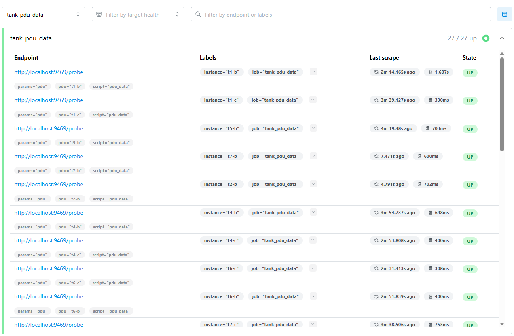
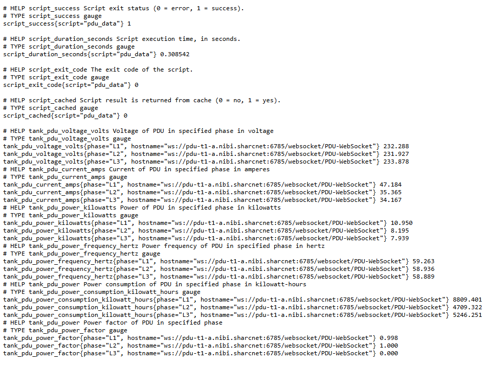
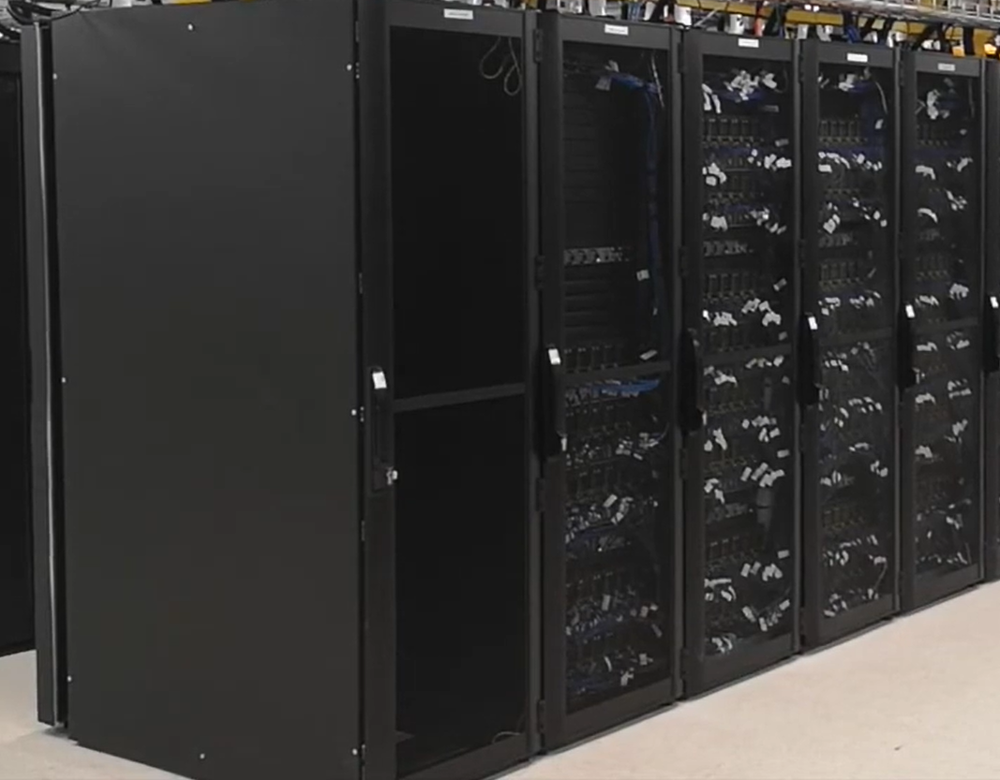

About My Employer
Over the past 4 months, I had the opportunity to work for SHARCNET (Shared Hierarchical Academic Research Computing Network), established in 2001. SHARCNET is a consortium that aggregates funding to purchase supercomputer systems which are shared among the members to perform research. These universities include Waterloo, Guelph, McMaster, Western and Windsor.
My Job
Throughout this term, I focused primarily on creating Python scripts to collect metrics from the supercomputer and display the data on Prometheus, an open-source monitoring system. In this process, I learned how to perform web scraping using Python, and how to export these scripts to Prometheus effectively. In addition to scripting, I was assigned several tasks in the Data Center, such as installing software on newly added nodes, connecting wiring in the server tanks, loading tape drives into the supercomputer, and clearing SMART errors from faulty SAS drives.
My Goals
Goal #1
My first goal was to improve my scripting skills in Python and other tools. In the past 4 months, I learned how to perform web scraping using Python for the first time, then how to export my scripts to Prometheus. I further expanded my knowledge by scraping from different sources. The first web scraping script I wrote simply grabbed from one of their data tracking sites. I then created a script to scrape data from a WebSocket server. Finally, the last script that I created scraped data used for time series modeling (TSM), which updated its data every few minutes. Overall, I believe that I met this goal, as I now have the experience of web scraping from many different sources and displayed data in various formats.
On the right, is one of my scripts that was uploaded to Prometheus. Using Prometheus, I was able to run my script with different parameters, with each parameter representing an individual node of the tank PDUs (Power Distribution Units). This allowed me to execute the script for all 27 PDU nodes (9 tanks with 3 nodes each).

Goal #2
My second goal was to create web scraping scripts in Python. Similar to Goal #1, I wanted to learn how to use Python to collect metrics from supercomputer units. However, using the data that I had scraped and converting it into Prometheus metrics was a difficult process. A lot of the data output was messy and hard to read, some datasets were so long, that it took several minutes to generate results. Over the past 4 months, I learned efficient ways in Python to extract the data I want to output, and how to print them into the correct format for Prometheus. If you look back at my first script to the last, you can see the efficiency of my scripts improve over time, as I would find better and faster methods to convert the data. Overall, I believe that I surpassed this goal as not only did I create web scraping scripts to deploy to Prometheus, but I also learned how to make my programs run more efficiently using various different strategies.
On the right, is the output of one of my web scraping scripts using the Prometheus format. I made sure to include where the data was coming from, what it was measuring, the units, and of course, the value of each metric.

Goal #3
My final goal was to take initiative and be more proactive. This goal had me ask questions when necessary, and complete extra tasks as they arose. In addition to my scripting tasks, there were many tasks that were assigned to me to complete over the course of the 4 months. These tasks included loading tape drives, connecting wiring in the server tanks, installing software on newly added nodes, clearing SMART errors on SAS drives, and more. I believe that I achieved this goal as I was always willing to take on more work, which not only helped my colleagues, but also provided a break from scripting and helped prevent burnout. Throughout this co-op term, I consistently volunteered for hands-on tasks in the data center and aimed to be as useful as possible, which I believe that I successfully accomplished.
On the right is the racks containing the units on which I had installed software. The process included me plugging in a USB, rearranging the data on the rack to make space for the new software, installing the software, and finally restarting the system.

Final Thoughts and Reflection
This co-op term with SHARCNET was very important to my growth as a Software Engineering student, and it taught me how to be a good colleague. My 8-month co-op term in 2024 was a very valuable experience; however, it did not involve the same level of consistent human interaction as my experience with SHARCNET. During this term with SHARCNET, I worked alongside another co-op student from Waterloo, and we collaborated on many of the hands-on tasks we were assigned. I also worked together with my colleagues to help them on tasks that required multiple people to complete. While I was able to learn and apply my coding skills in a work environment, what I'm taking away the most from this experience are the teamwork skills I developed and I think that these are valuable skills for me to learn if I want to be successful in school, and future work opportunities. Thank you SHARCNET for allowing me to be part of your team for the last 4 months, and I am excited for future co-op opportunities to come!
*All images on this site were used with the permission of my employer